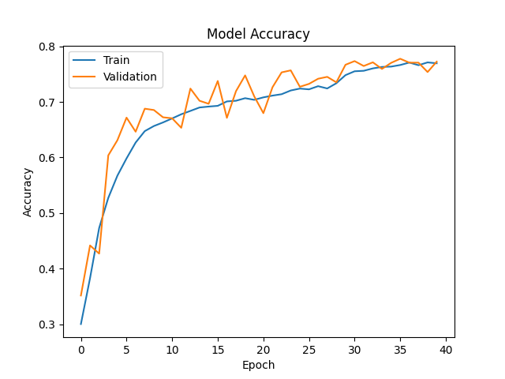
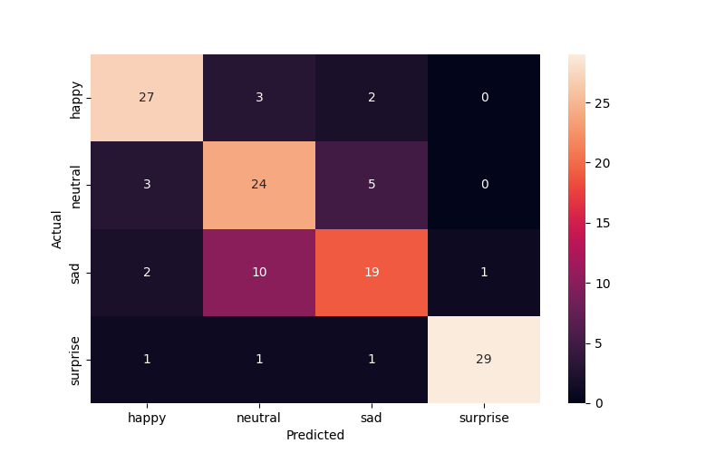
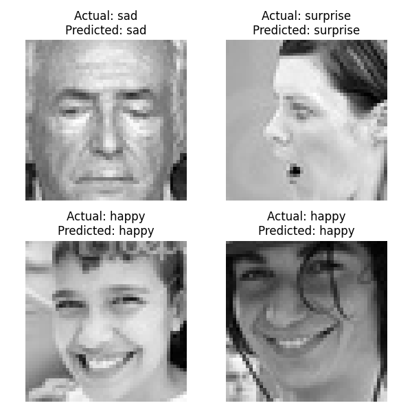

        <html>
        <head><title>Model Summary - 2024-04-10 13:51:15</title></head>
        <body>
        <h1>Model Configuration</h1>
        <pre>model:
  compile:
    learning_rate: 0.01
    optimizer: RMSprop
    optimizer_name: adam
  data:
    color_layers: 1
    color_mode: grayscale
    img_height: 48
    img_width: 48
    use_data_loaders: true
  layers:
  - filters: 64
    kernel_size:
    - 2
    - 2
    padding: same
    type: Conv2D
  - type: BatchNormalization
  - alpha: 0.1
    type: LeakyReLU
  - pool_size:
    - 2
    - 2
    type: MaxPooling2D
  - filters: 128
    kernel_size:
    - 2
    - 2
    padding: same
    type: Conv2D
  - type: BatchNormalization
  - alpha: 0.1
    type: LeakyReLU
  - pool_size:
    - 2
    - 2
    type: MaxPooling2D
  - filters: 256
    kernel_size:
    - 2
    - 2
    padding: same
    type: Conv2D
  - type: BatchNormalization
  - alpha: 0.1
    type: LeakyReLU
  - pool_size:
    - 2
    - 2
    type: MaxPooling2D
  - filters: 512
    kernel_size:
    - 2
    - 2
    padding: same
    type: Conv2D
  - type: BatchNormalization
  - alpha: 0.1
    type: LeakyReLU
  - pool_size:
    - 2
    - 2
    type: MaxPooling2D
  - filters: 128
    kernel_size:
    - 2
    - 2
    padding: same
    type: Conv2D
  - type: BatchNormalization
  - alpha: 0.1
    type: LeakyReLU
  - pool_size:
    - 2
    - 2
    type: MaxPooling2D
  - type: Flatten
  - activation: relu
    type: Dense
    units: 512
  - activation: relu
    type: Dense
    units: 128
  - type: Dense
    units: 64
  - type: BatchNormalization
  - type: ReLU
  - activation: softmax
    type: Dense
    units: 4
  train:
    batch_size: 16
    epochs: 40
    patience: 7
</pre>
        <h1>Model Summary</h1>
        <pre>Model: "sequential"
┏━━━━━━━━━━━━━━━━━━━━━━━━━━━━━━━━━━━━━━┳━━━━━━━━━━━━━━━━━━━━━━━━━━━━━┳━━━━━━━━━━━━━━━━━┓
┃ Layer (type)                         ┃ Output Shape                ┃         Param # ┃
┡━━━━━━━━━━━━━━━━━━━━━━━━━━━━━━━━━━━━━━╇━━━━━━━━━━━━━━━━━━━━━━━━━━━━━╇━━━━━━━━━━━━━━━━━┩
│ conv2d (Conv2D)                      │ (None, 48, 48, 64)          │             320 │
├──────────────────────────────────────┼─────────────────────────────┼─────────────────┤
│ batch_normalization                  │ (None, 48, 48, 64)          │             256 │
│ (BatchNormalization)                 │                             │                 │
├──────────────────────────────────────┼─────────────────────────────┼─────────────────┤
│ leaky_re_lu (LeakyReLU)              │ (None, 48, 48, 64)          │               0 │
├──────────────────────────────────────┼─────────────────────────────┼─────────────────┤
│ max_pooling2d (MaxPooling2D)         │ (None, 24, 24, 64)          │               0 │
├──────────────────────────────────────┼─────────────────────────────┼─────────────────┤
│ conv2d_1 (Conv2D)                    │ (None, 24, 24, 128)         │          32,896 │
├──────────────────────────────────────┼─────────────────────────────┼─────────────────┤
│ batch_normalization_1                │ (None, 24, 24, 128)         │             512 │
│ (BatchNormalization)                 │                             │                 │
├──────────────────────────────────────┼─────────────────────────────┼─────────────────┤
│ leaky_re_lu_1 (LeakyReLU)            │ (None, 24, 24, 128)         │               0 │
├──────────────────────────────────────┼─────────────────────────────┼─────────────────┤
│ max_pooling2d_1 (MaxPooling2D)       │ (None, 12, 12, 128)         │               0 │
├──────────────────────────────────────┼─────────────────────────────┼─────────────────┤
│ conv2d_2 (Conv2D)                    │ (None, 12, 12, 256)         │         131,328 │
├──────────────────────────────────────┼─────────────────────────────┼─────────────────┤
│ batch_normalization_2                │ (None, 12, 12, 256)         │           1,024 │
│ (BatchNormalization)                 │                             │                 │
├──────────────────────────────────────┼─────────────────────────────┼─────────────────┤
│ leaky_re_lu_2 (LeakyReLU)            │ (None, 12, 12, 256)         │               0 │
├──────────────────────────────────────┼─────────────────────────────┼─────────────────┤
│ max_pooling2d_2 (MaxPooling2D)       │ (None, 6, 6, 256)           │               0 │
├──────────────────────────────────────┼─────────────────────────────┼─────────────────┤
│ conv2d_3 (Conv2D)                    │ (None, 6, 6, 512)           │         524,800 │
├──────────────────────────────────────┼─────────────────────────────┼─────────────────┤
│ batch_normalization_3                │ (None, 6, 6, 512)           │           2,048 │
│ (BatchNormalization)                 │                             │                 │
├──────────────────────────────────────┼─────────────────────────────┼─────────────────┤
│ leaky_re_lu_3 (LeakyReLU)            │ (None, 6, 6, 512)           │               0 │
├──────────────────────────────────────┼─────────────────────────────┼─────────────────┤
│ max_pooling2d_3 (MaxPooling2D)       │ (None, 3, 3, 512)           │               0 │
├──────────────────────────────────────┼─────────────────────────────┼─────────────────┤
│ conv2d_4 (Conv2D)                    │ (None, 3, 3, 128)           │         262,272 │
├──────────────────────────────────────┼─────────────────────────────┼─────────────────┤
│ batch_normalization_4                │ (None, 3, 3, 128)           │             512 │
│ (BatchNormalization)                 │                             │                 │
├──────────────────────────────────────┼─────────────────────────────┼─────────────────┤
│ leaky_re_lu_4 (LeakyReLU)            │ (None, 3, 3, 128)           │               0 │
├──────────────────────────────────────┼─────────────────────────────┼─────────────────┤
│ max_pooling2d_4 (MaxPooling2D)       │ (None, 1, 1, 128)           │               0 │
├──────────────────────────────────────┼─────────────────────────────┼─────────────────┤
│ flatten (Flatten)                    │ (None, 128)                 │               0 │
├──────────────────────────────────────┼─────────────────────────────┼─────────────────┤
│ dense (Dense)                        │ (None, 512)                 │          66,048 │
├──────────────────────────────────────┼─────────────────────────────┼─────────────────┤
│ dense_1 (Dense)                      │ (None, 128)                 │          65,664 │
├──────────────────────────────────────┼─────────────────────────────┼─────────────────┤
│ dense_2 (Dense)                      │ (None, 64)                  │           8,256 │
├──────────────────────────────────────┼─────────────────────────────┼─────────────────┤
│ batch_normalization_5                │ (None, 64)                  │             256 │
│ (BatchNormalization)                 │                             │                 │
├──────────────────────────────────────┼─────────────────────────────┼─────────────────┤
│ re_lu (ReLU)                         │ (None, 64)                  │               0 │
├──────────────────────────────────────┼─────────────────────────────┼─────────────────┤
│ dense_3 (Dense)                      │ (None, 4)                   │             260 │
└──────────────────────────────────────┴─────────────────────────────┴─────────────────┘
 Total params: 1,096,452 (4.18 MB)
 Trainable params: 1,094,148 (4.17 MB)
 Non-trainable params: 2,304 (9.00 KB)
</pre>
        <h2>Test Accuracy</h2>
        <p>
1/8 ━━━━━━━━━━━━━━━━━━━━ 0s 16ms/step - accuracy: 0.8750 - loss: 0.2776
8/8 ━━━━━━━━━━━━━━━━━━━━ 0s 2ms/step - accuracy: 0.7941 - loss: 0.4551 

1/8 ━━━━━━━━━━━━━━━━━━━━ 2s 399ms/step
8/8 ━━━━━━━━━━━━━━━━━━━━ 0s 3ms/step  
</p>
        <h2>Accuracy Plot</h2>
        
        <h2>Classification Report</h2>
        <pre>              precision    recall  f1-score   support

       happy       0.82      0.84      0.83        32
     neutral       0.63      0.75      0.69        32
         sad       0.70      0.59      0.64        32
    surprise       0.97      0.91      0.94        32

    accuracy                           0.77       128
   macro avg       0.78      0.77      0.77       128
weighted avg       0.78      0.77      0.77       128

</pre>
        <h2>History</h2>
        <pre>Epoch 1: accuracy: 0.3005, loss: 1.3744, val_accuracy: 0.3518, val_loss: 1.4030, learning_rate: 0.0100
Epoch 2: accuracy: 0.3830, loss: 1.2692, val_accuracy: 0.4418, val_loss: 1.1983, learning_rate: 0.0100
Epoch 3: accuracy: 0.4732, loss: 1.1402, val_accuracy: 0.4272, val_loss: 1.4841, learning_rate: 0.0100
Epoch 4: accuracy: 0.5274, loss: 1.0310, val_accuracy: 0.6038, val_loss: 0.9037, learning_rate: 0.0100
Epoch 5: accuracy: 0.5673, loss: 0.9667, val_accuracy: 0.6311, val_loss: 0.8357, learning_rate: 0.0100
Epoch 6: accuracy: 0.5983, loss: 0.9285, val_accuracy: 0.6717, val_loss: 0.8026, learning_rate: 0.0100
Epoch 7: accuracy: 0.6269, loss: 0.8863, val_accuracy: 0.6464, val_loss: 0.8261, learning_rate: 0.0100
Epoch 8: accuracy: 0.6474, loss: 0.8562, val_accuracy: 0.6878, val_loss: 0.7650, learning_rate: 0.0100
Epoch 9: accuracy: 0.6566, loss: 0.8369, val_accuracy: 0.6854, val_loss: 0.7442, learning_rate: 0.0100
Epoch 10: accuracy: 0.6630, loss: 0.8230, val_accuracy: 0.6723, val_loss: 0.7780, learning_rate: 0.0100
Epoch 11: accuracy: 0.6703, loss: 0.8048, val_accuracy: 0.6705, val_loss: 0.8250, learning_rate: 0.0100
Epoch 12: accuracy: 0.6777, loss: 0.7862, val_accuracy: 0.6534, val_loss: 0.8331, learning_rate: 0.0100
Epoch 13: accuracy: 0.6838, loss: 0.7794, val_accuracy: 0.7239, val_loss: 0.6967, learning_rate: 0.0100
Epoch 14: accuracy: 0.6899, loss: 0.7629, val_accuracy: 0.7020, val_loss: 0.7307, learning_rate: 0.0100
Epoch 15: accuracy: 0.6916, loss: 0.7587, val_accuracy: 0.6966, val_loss: 0.7399, learning_rate: 0.0100
Epoch 16: accuracy: 0.6929, loss: 0.7540, val_accuracy: 0.7376, val_loss: 0.6502, learning_rate: 0.0100
Epoch 17: accuracy: 0.7008, loss: 0.7375, val_accuracy: 0.6713, val_loss: 0.7920, learning_rate: 0.0100
Epoch 18: accuracy: 0.7020, loss: 0.7354, val_accuracy: 0.7193, val_loss: 0.6767, learning_rate: 0.0100
Epoch 19: accuracy: 0.7067, loss: 0.7301, val_accuracy: 0.7476, val_loss: 0.6423, learning_rate: 0.0100
Epoch 20: accuracy: 0.7037, loss: 0.7309, val_accuracy: 0.7099, val_loss: 0.7066, learning_rate: 0.0100
Epoch 21: accuracy: 0.7081, loss: 0.7170, val_accuracy: 0.6797, val_loss: 0.8141, learning_rate: 0.0100
Epoch 22: accuracy: 0.7113, loss: 0.7099, val_accuracy: 0.7263, val_loss: 0.6628, learning_rate: 0.0100
Epoch 23: accuracy: 0.7138, loss: 0.7089, val_accuracy: 0.7531, val_loss: 0.6246, learning_rate: 0.0100
Epoch 24: accuracy: 0.7205, loss: 0.7003, val_accuracy: 0.7567, val_loss: 0.6212, learning_rate: 0.0100
Epoch 25: accuracy: 0.7239, loss: 0.6941, val_accuracy: 0.7271, val_loss: 0.6857, learning_rate: 0.0100
Epoch 26: accuracy: 0.7225, loss: 0.6838, val_accuracy: 0.7324, val_loss: 0.6809, learning_rate: 0.0100
Epoch 27: accuracy: 0.7282, loss: 0.6820, val_accuracy: 0.7416, val_loss: 0.6522, learning_rate: 0.0100
Epoch 28: accuracy: 0.7241, loss: 0.6806, val_accuracy: 0.7450, val_loss: 0.6453, learning_rate: 0.0100
Epoch 29: accuracy: 0.7335, loss: 0.6670, val_accuracy: 0.7352, val_loss: 0.6778, learning_rate: 0.0100
Epoch 30: accuracy: 0.7481, loss: 0.6290, val_accuracy: 0.7667, val_loss: 0.5865, learning_rate: 0.0020
Epoch 31: accuracy: 0.7550, loss: 0.6104, val_accuracy: 0.7734, val_loss: 0.5724, learning_rate: 0.0020
Epoch 32: accuracy: 0.7559, loss: 0.6101, val_accuracy: 0.7645, val_loss: 0.5975, learning_rate: 0.0020
Epoch 33: accuracy: 0.7602, loss: 0.6004, val_accuracy: 0.7711, val_loss: 0.5838, learning_rate: 0.0020
Epoch 34: accuracy: 0.7629, loss: 0.5945, val_accuracy: 0.7593, val_loss: 0.6012, learning_rate: 0.0020
Epoch 35: accuracy: 0.7635, loss: 0.5872, val_accuracy: 0.7701, val_loss: 0.5792, learning_rate: 0.0020
Epoch 36: accuracy: 0.7663, loss: 0.5938, val_accuracy: 0.7776, val_loss: 0.5651, learning_rate: 0.0020
Epoch 37: accuracy: 0.7707, loss: 0.5753, val_accuracy: 0.7705, val_loss: 0.5793, learning_rate: 0.0020
Epoch 38: accuracy: 0.7660, loss: 0.5810, val_accuracy: 0.7705, val_loss: 0.5769, learning_rate: 0.0020
Epoch 39: accuracy: 0.7710, loss: 0.5692, val_accuracy: 0.7537, val_loss: 0.6026, learning_rate: 0.0020
Epoch 40: accuracy: 0.7694, loss: 0.5782, val_accuracy: 0.7724, val_loss: 0.5748, learning_rate: 0.0020
</pre>
        <h2>Confusion Matrix</h2>
        
        <h2>Predicted Images</h2>
        
        </body>
        </html>
        